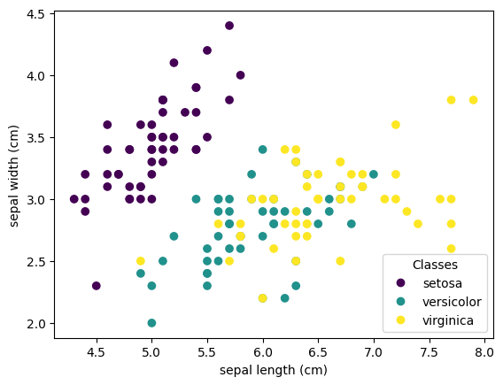

IRIS Clustering#
Mahmood Amintoosi, Fall 2024
Computer Science Dept, Ferdowsi University of Mashhad
برنامه زیر برای خوشهبندی دادههای گل زنبق اصلاح و تکمیل شود. دقت خوشهبندی چاپ شود (چند درصد از دادهها به درستی خوشهبندی شدهاند)
import numpy as np
import matplotlib.pyplot as plt
from sklearn import datasets
from sklearn.cluster import kmeans
iris = datasets.load_iris()
# iris
_, ax = plt.subplots()
scatter = ax.scatter(iris.data[:, 0], iris.data[:, 1], c=iris.target)
ax.set(xlabel=iris.feature_names[0], ylabel=iris.feature_names[1])
_ = ax.legend(
scatter.legend_elements()[0], iris.target_names, loc="lower right", title="Classes"
)

plt.scatter(iris.data[:, 0], iris.data[:, 1], c=iris.target)
# plt.scatter(centroids[:, 0], centroids[:, 1], c='black', s=200, alpha=0.5)
# plt.show()
<matplotlib.collections.PathCollection at 0x2675d6a9b88>